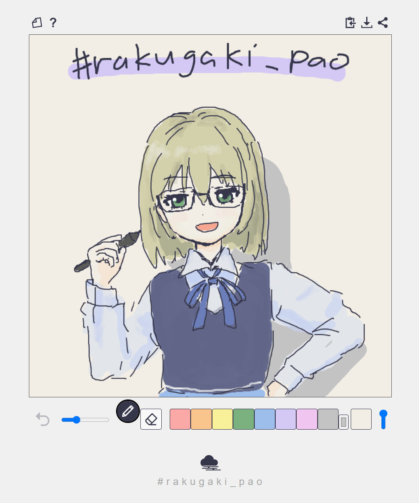

pao_board
電子メモパッド風お絵描きアプリ使い方
画面上で指やペンタブレットやマウスでお絵描きができますの。右上のボタンで、描いた絵を保存したり、クリップボードにコピーしたりできましてよ。
アンドゥや消しゴム機能はあえて付けておりませんの。
一発描きを楽しんでくださいね！
姉妹版のご紹介
本アプリは、おえかきアプリ rakugaki_pao の姉妹版です。rakugaki_pao は、線画と色塗りに特化したシンプルなペイントアプリですわ。
ぞうさんのボタン
よろしければこちらもお試しくださいませ。

なお、pao_board の利用規約は rakugaki_pao と同じものを適用いたします。
詳しくは rakugaki_pao について をご覧くださいまし。
作者

こすふぃー @cosphi@mistodon.cloud
連絡先: mastodon(fedibird) / Misskey / 𝕏